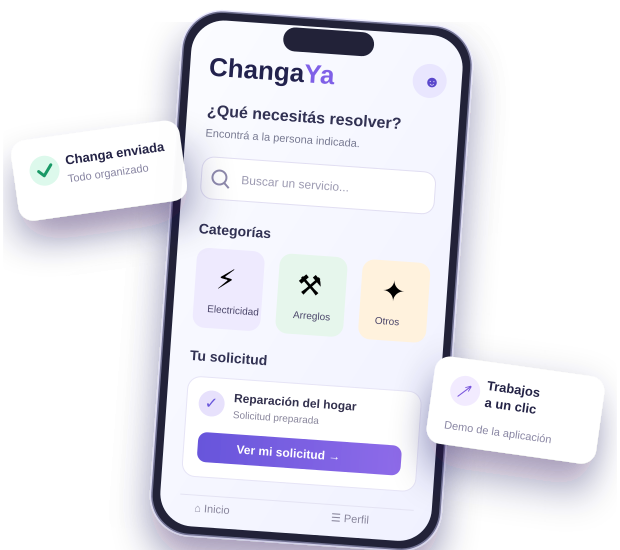

PROYECTO FINAL · DESTACADO
↗ ChangaYa
Una solución para encontrar ayuda cerca tuyo.
ChangaYa es una aplicación en desarrollo que busca conectar clientes con trabajadores para realizar tareas o servicios. La idea es que pedir una changa sea un proceso simple, claro y organizado.
Conocé cómo funciona
VISTA CONCEPTUAL DEL PROYECTO